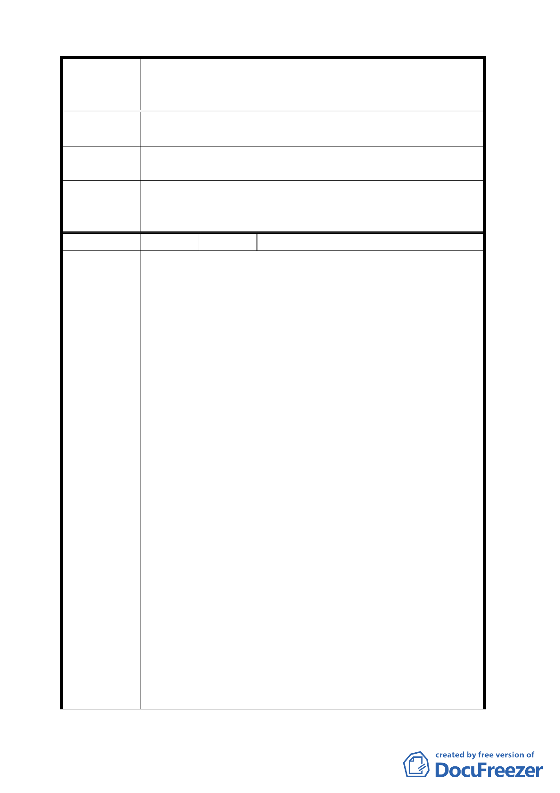

案名
建議辦法
委員會
決議
編號
陳情理由
建議辦法
變更臺北市華光社區暨週邊地區住宅區、電信用地、郵
政用地及變電所用地土地為商業區、數位科技專用區及
金融服務專用區主要計畫案
有餘裕轉供支應，是可預見施工期間將嚴重影響地區用
電。
鑑於電力設施性質特殊，爰建請賡續維持其原「變
電所用地」之土地使用分區類別，俾保障公共利益。
同意市府為整體環境景觀考量，將變電所用地變更
為特定專用區，惟未來該特定專用區內仍應允許變電所
設施使用，以維持地區供電需求。
24 陳情人 林銀
1.本案號稱都市更新旗艦計畫，僅依據行政院 96.7.4.院
會一句「打造金融管理及數位通訊中心、創造無限商
機」，即將該地區從林洋港擔任市長以來數十年即以都
市更新方式開發之本地區委託規劃設計報告書，及花
費無法計數之臺北市政府專業公務人員人力物力全拋
棄，數十年來對司法宿舍居民協調承諾，就少數人主
觀意見就推翻。
2.變更為數位科技專用區，也不過是將現有電信用地變
更為新亮眼名字，對該電信實質發展毫無助益可言，
土地不變更該等公司也仍可繼續營運發展。
3.行政院 95.10.09.會議對現住戶安置處理方式決議：「照
經建會研商結論騰空標售，原住戶將由中央妥予處
理」。我們支持政府經濟政策，但要爭取就地安置在華
光社區住宅區土地，並比照眷村改建方式安置。既然
政府要賣土地增加稅收，也可以將一點住宅區土地賣
給司法宿舍人員，參採眷村改建條例予以安置，達成
安置及增加國家稅收目標，同時獲得百姓肯定政府勤
政愛民。
4.請體恤居住在該地區人員及目前子女就讀學籍問題，
該地區公園用地已達法定面積，尤以對側即有數十公
頃中正紀念堂公園。
1.請說明打造金融管理中心及商業區之財務分析報告為
何？達成目標數據為何？創造多少商機演算數據為
何？課題？因應措施？增加商業區、金融管理中心段
環境等各方面的衝擊及因應措施？並未見有具體詳盡
研究報告來支持，將住宅區變更為商業區未來該土地
並將出售，賣給有辦法的少數財團，住宅區變更為商
- 16 -